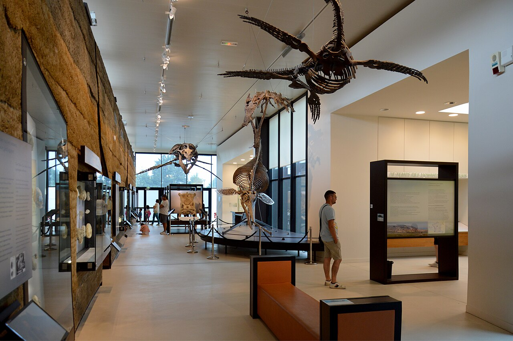

Explorer par thème
Histoire naturelle
Des collections pour découvrir les espèces, les milieux et les sciences naturelles.
4 lieux à découvrir
Auvergne-Rhône-Alpes
Le musée des Confluences vu depuis le Rhône, à Lyon.Photo : Ronavni · Wikimedia Commons · CC BY-SA 4.0 · Redimensionnée, sans recadrage.
Musée des Confluences
Consulter la fiche du musée →

Île-de-France
Une salle du musée de l’Homme à Paris, photographiée en 2024.Photo : Frédéric Picard 28 · Wikimedia Commons · CC BY-SA 4.0 · Redimensionnée, sans recadrage.
Musée de l’Homme
Consulter la fiche du musée →

NormandieUne salle du Paléospace à Villers-sur-Mer, photographiée en 2024.Photo : DimiTalen · Wikimedia Commons · CC0 · Redimensionnée, sans recadrage.
Paléospace
Consulter la fiche du musée →


Normandie
Le parc et les bâtiments du domaine Emmanuel-Liais à Cherbourg, photographiés en 2015.Photo : JMEnault_Ville de Cherbourg-en-Cotentin · Wikimedia Commons · CC BY-SA 4.0 · Redimensionnée, sans recadrage.
Muséum Emmanuel-Liais
Consulter la fiche du musée →